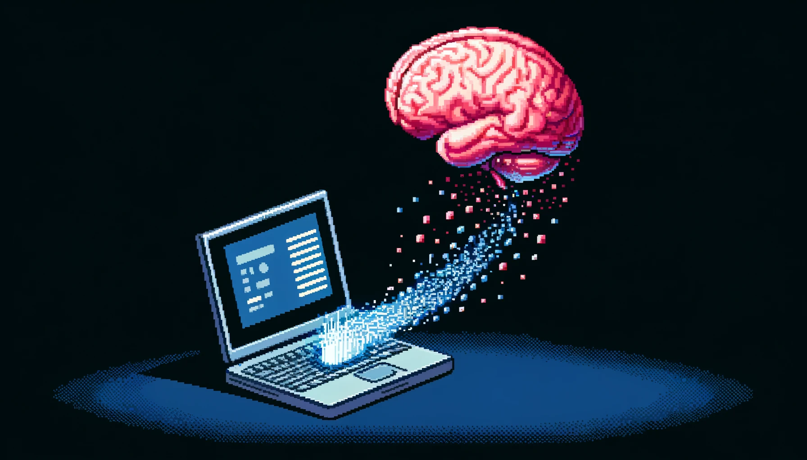

A novel sensing device to record EEG from inside the ear
EEG is a non-invasive method for recording electrical brain activity.
Electricity is the natural language of the brain so EEG provides a natural way to interface with computers.
The golden standard uses a gel-filled electrode cap, but it's impractical for everyday use due to messy gel, short time window for recording, and user discomfort.
Luckily, we can record EEG directly from the ear. This is a more accessible and practical way to record brain activity on for long-term, daily monitoring.
We can implement a wearable BCI to capture cognitive signals recorded from the ear.
EEG Sleep BCI to Induce Lucid Dreaming
One method to induce lucid dreaming involves maintaining the hypnagogic state, a transitional phase between wakefulness and sleep specifically between stages N1 (light sleep) and N2 (deeper sleep). This state serves as a bridge between the conscious and subconscious mind. By detecting these sleep stages, we can provide feedback stimulation to help maintain this limbo state—keeping the mind alert enough to remain aware but not fully awake. This method has been used by Albert Einstein, Thomas Edison and Salvador Dali as a tool for creative inspiration.
This state is called the hypoagogic state. This state is the gateway to lucid dreaming and other states of consciousnes, like astral projection and other out of body experiences.
Potential Pipeline:
Record Sleep Data: Use a Muse S headband to gather EEG sleep data.
Optimize Model: Fine-tune a pre-trained EEG sleep staging model with personal sleep data.
Implement Classifier: Integrate online decoder into app that predicts incoming EEG stream as hypogogia to provide the necessary feedback stimulation.
Internet of Things BCI
Using object detection and motor imagery to control various devices

Object detection is a computer vision technique that identifies and locates objects within an image or video. In the context of IoT devices, object detection can be used to select a device that the user wants to interact with. Motor Imagery EEG is a technology that detects the user's intention to perform a specific movement, such as grasping an object or moving a limb, by measuring electrical activity in the brain. By combining object detection with motor imagery EEG, users can select and control an IoT device through their thoughts. For example, a user could use object detection to select a smart light bulb and then use motor imagery EEG to turn it on or off without physically interacting with a switch or button.
Brain Stimulation Headband
A non-invasive neuromodulation device to improve cognitive function using infrared LEDs
Photobiomodulation is the application of near-infrared light to promote healing, decrease pain, and restore cellular energy balance. When this light shines on the brain, it can improve cognitive and emotional function. This is usually done with an expensive laser that requires special training, making it inconveneint for most people to use. This project is an attempt to provide a low cost, alternative, portable, and safe light therapy device.
PUFFBOT (Programmable Unit for Fine Fume Biological Observation and Testing)
PUFFBOT (Programmable Unit for Fine Fume Biological Observation and Testing), is a smart, fully automated smoke exposure system designed for in vivo experiments. This innovative device allows researchers to load multiple rounds of cigarettes and program a variety of experimental parameters to precisely control the smoke exposure using real-time feedback.
This level of precision and automation is essential for pulmonary research, enabling scientists to study the impact of smoke exposure on live rodents with unparalleled accuracy. By replicating real-world smoking conditions, PUFFBOT provides valuable insights into the effects of smoke on respiratory health, helping to advance our understanding of pulmonary diseases and potentially paving the way for new treatments and interventions.
Link Prediction in Social Networks
Link prediciton is explored in social networks derived from human mobility and points of interest (POI) data.
The goal is to predict potential social interactions and meeting places by constructing two main types of networks: a person-to-person network and a person-to-place network. The person-to-person network connects individuals based on shared locations and the duration of their co-presence, while the person-to-place network links individuals to locations they visit.
The architecture of the Graph Neural Network (GNN) we impelemnted includes two primary models: a two-layer Graph Convolutional Network (GCN) and a two-layer GraphSAGE model. These models utilize Node2Vec embeddings as input features. The networks are split into positive and negative graphs for training, with the models trained using binary cross-entropy loss over 100 epochs. The link prediction models aim to identify the likelihood of interactions between individuals and their probable meeting places.
Results indicate that both GCN and GraphSAGE models perform effectively in predicting social interactions and locations, demonstrating that human mobility data can provide valuable insights into social network formation.
Custom Mini Synth
Customized mini synth module to hook up to a yamaha shs10 keytar for midi control.
User interface includes screen, buttons, and knobs for control of the waveform